Ken Thompson and Dennis Ritchie pioneered the C programming language and the UNIX operating system, which revolutionized personal computing with their efficiency and simplicity. Inspired by these pioneers, a new language called BFlex emerges. Named 'B' after Ken Thompson, who also contributed to the creation of Go, BFlex builds on its predecessors, Go and Rust, leveraging their robust frameworks and innovative features.
⚡ See some code examples using BFlex
1
#
import
std
::
"io"
::
*.?
;
2
3
fun
main
() {
4
cout
<<
"Hello world"
;
5
}
Search directly in the documentation
How are we?
Lucas Silveira
“I started programming at age 8, making scripts for Windows computers. At 11, I became interested in more advanced levels. I decided to start a big project, called LGrow. At 12, I delved into low-level programming, refining the project several times. Today , with my partner Eduardo Bandeira, we founded BFlex”
BFlex
The BFlex project is an ambitious project, with the aim of bringing modernity and maintaining the performance of old-school languages. Rust and Go are the main inspirations for the project.